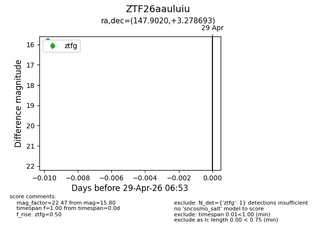
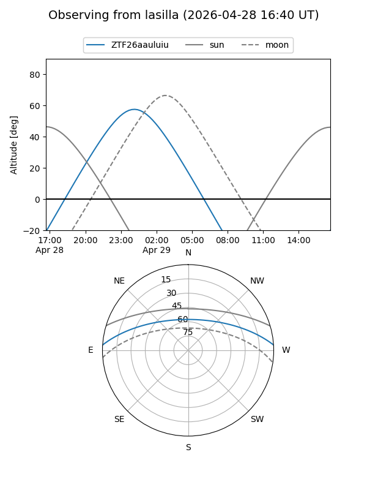
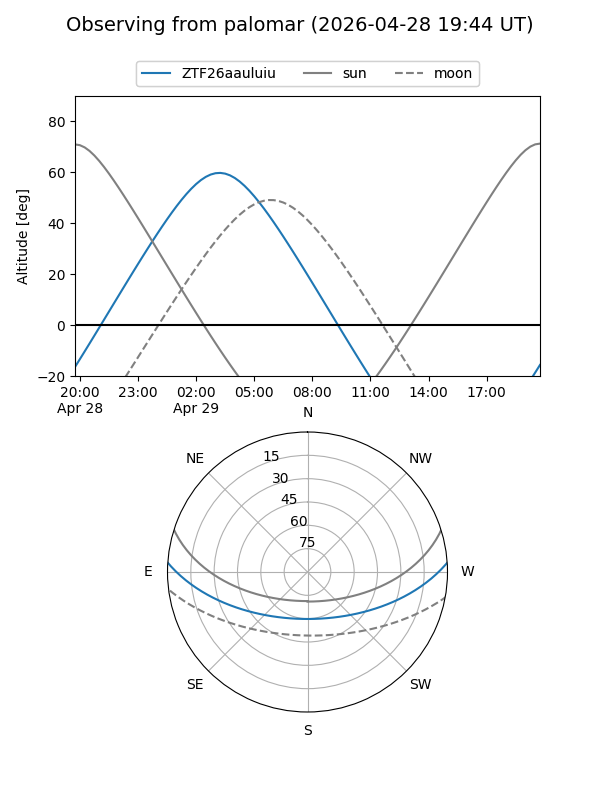

ZTF26aauluiu
Target ZTF26aauluiu at 2026-04-29 06:55
Aliases and brokers:
FINK: link
Lasair: link
ALeRCE: link
alt names
ZTF26aauluiu (ztf,fink_ztf)
Coordinates:
equatorial (ra, dec) = 147.9020,+3.27869
equatorial (HMS+DMS) = 09:51:36.48,+03:16:43.29
galactic (l, b) = (233.9639,+40.90687)
Flags:
Photometry:
last ztfg=15.80
1 ztfg detections
Lightcurve

Visibility


Additional plots